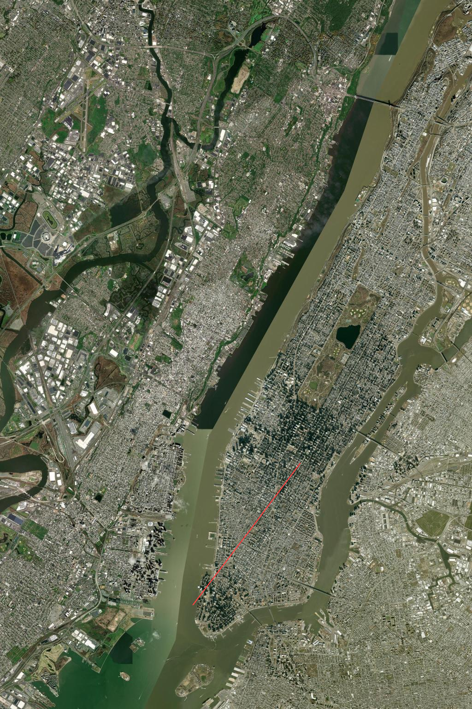

map_view
Server-side maps for Ruby on Rails
Render maps directly from your Rails views using a single line of code. No JavaScript required.
<%= map_for @locations %>
What is map_view?
map_view is a Ruby on Rails helper that renders maps on the server, using your application data.
The output is a static image (PNG, JPG, or GIF), suitable for dashboards, reports, PDFs, and internal tools.
Why server-side maps?
- No frontend JavaScript dependencies
- Deterministic and cacheable output
- Easy to test and audit
- Works in exports, emails, and PDFs
Route rendering example
Ideal for logistics, tracking, admin dashboards, and backend-driven systems where stability and control matter.
Status: early development.
If you are interested in following the project or using it in production, get in touch.
Contact / Early access
If you are interested in following the project or using it in production, get in touch.
Contact / Early access